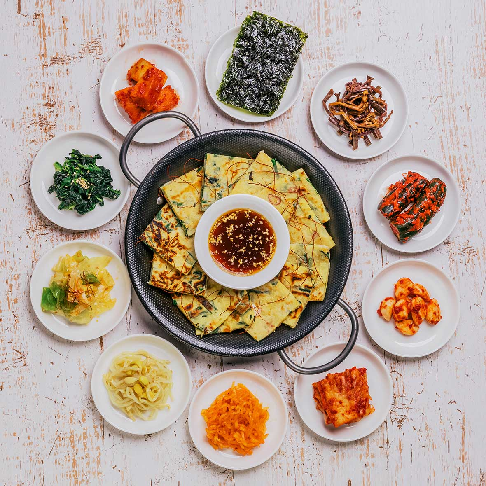
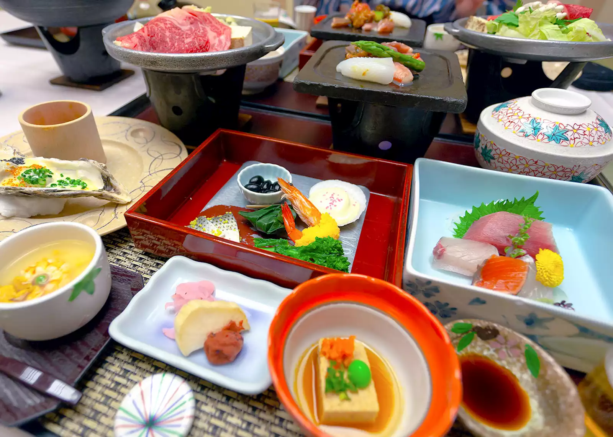

Discover World Cuisines
Explore authentic recipes from around the globe
Explore Cuisines
South Indian
Discover the vibrant flavors of South Indian cuisine known for its aromatic rice dishes, flavorful dosas, and spicy curries.

North Indian
Experience the rich and creamy curries, tandoori specialties, and diverse bread varieties of North Indian cuisine.
Korean
Enjoy the perfect balance of spicy, sweet, and savory flavors that make Korean cuisine a global favorite.
Japanese
Explore the elegant simplicity and refined techniques of Japanese cuisine, from sushi to ramen.
About Us
We are passionate food enthusiasts bringing you the best recipes from around the world. Our mission is to inspire your culinary journey with authentic flavors and stories.
Global Kitchen was founded in 2025 by passionate food enthusiasts who aimed to promote diverse cuisines with a focus on health-conscious cooking and mindful eating.
Each recipe on our site has been carefully tested and adapted for home cooking, ensuring you can recreate these global flavors in your own kitchen.